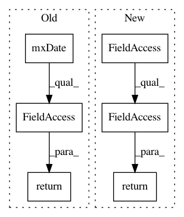

8e8106479c754fdf03f10b1112a83303beacb24b,Lib/sandbox/timeseries/tsdate.py,Date,day,#Date#,62
Before Change
self.__date = mx.DateTime.Date(year, month, day, _hours, _minutes, _seconds)
def day(self): return self.mxDate().day
def day_of_week(self): return self.mxDate().day_of_week
def month(self): return self.mxDate().month
def quarter(self): return monthToQuarter(self.mxDate().month)
After Change
self.value = self.__value()
def day(self): return self.mxDate.day
def day_of_week(self): return self.mxDate.day_of_week
def month(self): return self.mxDate.month
def quarter(self): return monthToQuarter(self.mxDate.month)
In pattern: SUPERPATTERN
Frequency: 4
Non-data size: 6
Instances
Project Name: scipy/scipy
Commit Name: 8e8106479c754fdf03f10b1112a83303beacb24b
Time: 2006-12-13
Author: mattknox_ca@localhost
File Name: Lib/sandbox/timeseries/tsdate.py
Class Name: Date
Method Name: day
Project Name: scipy/scipy
Commit Name: 8e8106479c754fdf03f10b1112a83303beacb24b
Time: 2006-12-13
Author: mattknox_ca@localhost
File Name: Lib/sandbox/timeseries/tsdate.py
Class Name: Date
Method Name: year
Project Name: scipy/scipy
Commit Name: 8e8106479c754fdf03f10b1112a83303beacb24b
Time: 2006-12-13
Author: mattknox_ca@localhost
File Name: Lib/sandbox/timeseries/tsdate.py
Class Name: Date
Method Name: month
Project Name: scipy/scipy
Commit Name: 8e8106479c754fdf03f10b1112a83303beacb24b
Time: 2006-12-13
Author: mattknox_ca@localhost
File Name: Lib/sandbox/timeseries/tsdate.py
Class Name: Date
Method Name: day_of_week